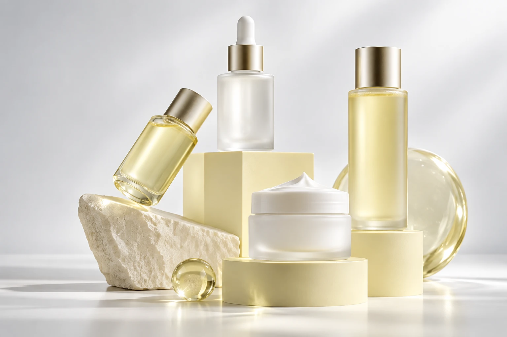

발견.
가능성을 알아보는 일
제품력과 브랜드의 이야기를 살피고,
타깃과 카테고리를 함께 이해합니다.
BEAUTY, BEYOND BOUNDARIES
브랜드의 가능성이 더 많은 일상에 닿도록.
뷰티오라가 새로운 유통의 길을 연결합니다.

WHY BEAUTYORA
좋은 제품을 만드는 일, 그다음은 좋은 접점을 찾는 일.
뷰티오라는 브랜드의 개성과 제품의 특성을 이해하고,
소비자가 직접 발견하고 경험할 수 있는 채널을 연결합니다.
OUR APPROACH
발굴부터 확장까지.
각 브랜드에 필요한 다음 단계를 함께 설계합니다.
제품력과 브랜드의 이야기를 살피고,
타깃과 카테고리를 함께 이해합니다.
제품의 특성과 고객 경험을 기준으로
브랜드에 적합한 판매 채널을 제안합니다.
현장의 반응과 채널 적합성을 확인하고
새로운 유통의 기회를 함께 검토합니다.
CHANNEL NETWORK
브랜드가 필요한 곳으로.
제품과 고객을 기준으로 연결합니다.
취향이 만나는 곳에서
채널 구성 및 입점 가능 여부는 브랜드·제품 특성과 각 채널의 운영 기준에 따라 달라집니다. 일부 채널은 협의·추진 중입니다.
PARTNERSHIP JOURNEY
브랜드를 소개해주세요.
그다음의 방향은 함께 찾아갑니다.
입점 제안 폼을 통해
브랜드와 제품을 소개해주세요.
제품과 타깃을 검토하고
적합한 채널을 제안합니다.
진행 방향을 함께 정하고
입점 준비를 이어갑니다.
현장의 반응을 살피며
다음 채널을 검토합니다.